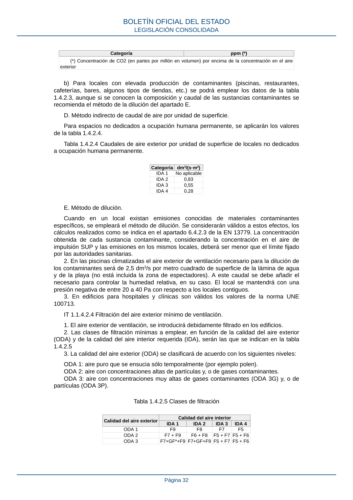

DB-HE2 RITE · edición 2022-08-02 · capa asociada
Documento RITE-asociada · SHA-256 del PDF ad1680c83bf4c7f5c656af1794c32ad0669ad9f36ac293737ff3f95177ff7b26
Página física 32 de 97.
Copia fiel del PDF fuente · Fuente oficial
Ficha de la disposición en la fuente oficial
Texto extraído y reorganizado: Basado en datos de la Agencia Estatal Boletín Oficial del Estado. PDF reproducido: Fuente de los datos: Agencia Estatal Boletín Oficial del Estado.
Formato: Texto de la página (Markdown)
Categoría ppm (*) (*) Concentración de CO2 (en partes por millón en volumen) por encima de la concentración en el aire exterior b) Para locales con elevada producción de contaminantes (piscinas, restaurantes, cafeterías, bares, algunos tipos de tiendas, etc.) se podrá emplear los datos de la tabla 1.4.2.3, aunque si se conocen la composición y caudal de las sustancias contaminantes se recomienda el método de la dilución del apartado E. D. Método indirecto de caudal de aire por unidad de superficie. Para espacios no dedicados a ocupación humana permanente, se aplicarán los valores de la tabla 1.4.2.4. Tabla 1.4.2.4 Caudales de aire exterior por unidad de superficie de locales no dedicados a ocupación humana permanente. Categoría dm3/(s·m2) IDA 1 No aplicable IDA 2 0,83 IDA 3 0,55 IDA 4 0,28 E. Método de dilución. Cuando en un local existan emisiones conocidas de materiales contaminantes específicos, se empleará el método de dilución. Se considerarán válidos a estos efectos, los cálculos realizados como se indica en el apartado 6.4.2.3 de la EN 13779. La concentración obtenida de cada sustancia contaminante, considerando la concentración en el aire de impulsión SUP y las emisiones en los mismos locales, deberá ser menor que el límite fijado por las autoridades sanitarias. 2. En las piscinas climatizadas el aire exterior de ventilación necesario para la dilución de los contaminantes será de 2,5 dm3/s por metro cuadrado de superficie de la lámina de agua y de la playa (no está incluida la zona de espectadores). A este caudal se debe añadir el necesario para controlar la humedad relativa, en su caso. El local se mantendrá con una presión negativa de entre 20 a 40 Pa con respecto a los locales contiguos. 3. En edificios para hospitales y clínicas son válidos los valores de la norma UNE 100713. IT 1.1.4.2.4 Filtración del aire exterior mínimo de ventilación. 1. El aire exterior de ventilación, se introducirá debidamente filtrado en los edificios. 2. Las clases de filtración mínimas a emplear, en función de la calidad del aire exterior (ODA) y de la calidad del aire interior requerida (IDA), serán las que se indican en la tabla 1.4.2.5 3. La calidad del aire exterior (ODA) se clasificará de acuerdo con los siguientes niveles: ODA 1: aire puro que se ensucia sólo temporalmente (por ejemplo polen). ODA 2: aire con concentraciones altas de partículas y, o de gases contaminantes. ODA 3: aire con concentraciones muy altas de gases contaminantes (ODA 3G) y, o de partículas (ODA 3P). Tabla 1.4.2.5 Clases de filtración Calidad del aire exterior Calidad del aire interior IDA 1 IDA 2 IDA 3 IDA 4 ODA 1 F9 F8 F7 F5 ODA 2 F7 + F9 F6 + F8 F5 + F7 F5 + F6 ODA 3 F7+GF*+F9 F7+GF+F9 F5 + F7 F5 + F6 BOLETÍN OFICIAL DEL ESTADO LEGISLACIÓN CONSOLIDADA Página 32

Datos candidatos: compruebe celdas y notas en el PDF.